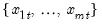
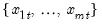

@rquantile By-Row Statistics Row quantiles in group. Quantiles for each row of the group. Syntax: @rquantile(x, q) x group q number, series Return: series For each observation corresponding to a row in the group of series, compute the q-quantile of the values  for the observation using the Rankit-Cleveland quantile definition, for . To compute the -quantile, first find , the smallest rank such that, where the order statistics represent data for the series ordered from low to high, and is the Rankit-Cleveland definition of the empirical distribution function: . For purposes of computing , tied ranks are assumed to take the last tied value. Then the quantile is computed as where the interpolating constant is for the smallest integer where . In the leading case where there are no tied values, . Examples show @rquantile(g, 0.25 returns a linked series of the 25th percentiles in the rows of group g. Cross-references See also @rmedian.


corresponding to a row in the group of
series, compute the q-quantile of the
values  for the observation using the Rankit-Cleveland quantile definition, for
.
 -quantile, first find
-quantile, first find  , the smallest rank such that,
, the smallest rank such that,
 series ordered from low to high, and
series ordered from low to high, and  is the Rankit-Cleveland definition of the empirical distribution function: . For purposes of computing
is the Rankit-Cleveland definition of the empirical distribution function: . For purposes of computing  , tied ranks are assumed to take the last tied value.
, tied ranks are assumed to take the last tied value. the smallest integer where . In the leading case where there are no tied values,
the smallest integer where . In the leading case where there are no tied values,  .
.